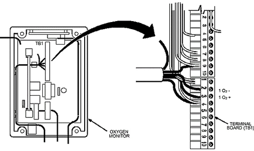

Loosen four captive screws and open the hinged cover. (See Illustration 30.)
At the oxygen monitor terminal board (TB1), use jumper wires to connect:
Green wire of sensor to terminal marked 1 O2 –
Orange wire of sensor to terminal marked 1 O2 +
Illustration 30: Terminal Board (TB1) Location in Oxygen Monitor
